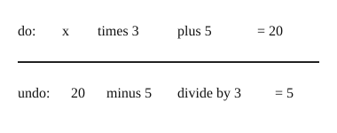

Part of Solving Two-Step Equations. Answer in the chat (1: ..., g: c), add sure or guess after any answer, and say done when finished.
Last time: 3x + 5 = 20. What is x? You said b) 5, and it is.

Two things were done to x, so you need two undo steps, and the order matters. Like taking off shoes and then socks, you undo the last step first: in 3x + 5 = 20 the + 5 came last, so it goes first (notes 4).
Q1. 4x + 3 = 27. What is x?
6 (sure)
Right: 4x = 24, then x = 6 (notes 4).
Q2. In your own words: why undo the + 3 before the times 4?
the + 3 was done last, so it is on the outside, and you have to take it off before you can get at the 4x
Right: undo the last step first (notes 4).
Q3. Bo says 2x - 6 = 10 gives x = 2, since 10 - 6 = 4 and 4 / 2 = 2. What is wrong?
the 6 was taken away, so you add it back: 2x = 16, x = 8 (sure)
Right: add undoes subtract, and 2 x 8 - 6 = 10 checks (notes 2, 6).
You can now solve ax + b = c by undoing in reverse order.